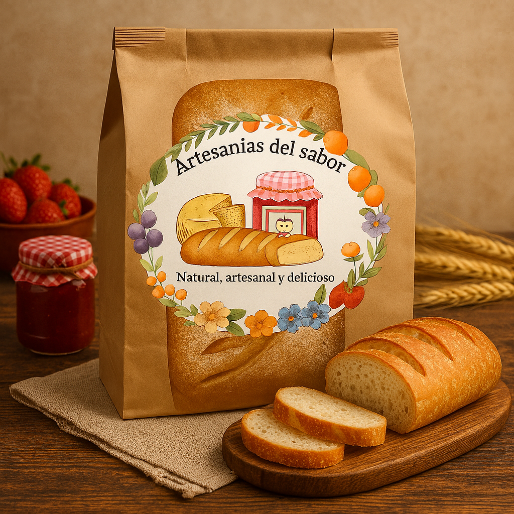

Pan natural de masa madre
Elaborado con levadura natural, sin conservadores ni azúcares añadidos, nuestro pan artesanal es una opción saludable que aporta nutrientes esenciales a tu cuerpo. Ideal para quienes buscan sabor auténtico y bienestar en cada bocado.
$80